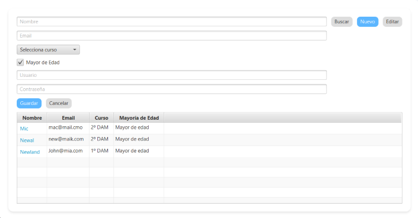

Para crear un nuevo usuario, selecciona el botón "nuevo" e introduce sus datos personales y, en caso de ser un Alumno o Tutor de empresa, el curso o empresa a la que pertenecen respectivamente.
Para editar un usuario, selecciona el botón "editar", selecciona el usuario que se va a editar e introduce los nuevos datos.
Volver